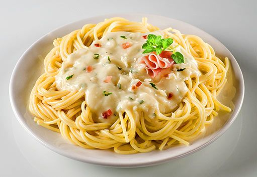

Jednoduchý recept na špagety s krémovou sýrovou omáčkou.
Špagety uvaříme dle návodu na obalu a slijeme.
Do hrnce vlijeme dvě smetany. Třetí smetanu smícháme s hladkou moukou a přidáme do hrnce za stálého míchání. Přivedeme k varu.
Nastrouháme eidam. Do horké smetanové směsi přidáme tavený sýr, rozmícháme, poté přidáme nastrouhaný eidam a mícháme, dokud omáčka nezhoustne a sýr se nerozpustí.
Dochutíme solí, pepřem, oreganem a tymiánem. Podáváme s těstovinami.